What the Dashboard design does on purpose, written down as rules, so the page stays one coherent thing as it changes and other pages can borrow from it.
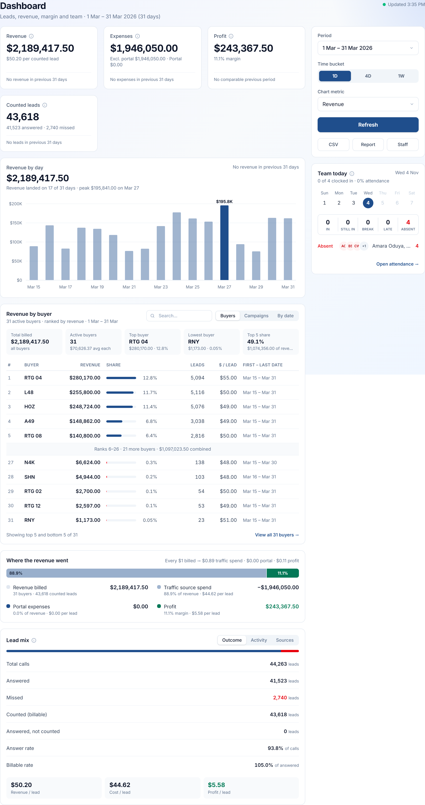
The designer's mock of the Dashboard was studied closely, block by block, and every recurring decision in it was pulled out and named. Each one is written as a rule: what it says, why it holds, and how the page applies it.
Check a change to the Dashboard against the principles (section 2) and the formatting rules (section 5); review it line by line against the tokens and component rules (sections 3 and 4). Sections 2, 3 and 5 are not Dashboard-specific, so other pages can borrow them.
The screenshots are of the page as built, using the local sample data: March 2026 for the profitable state, and 4 May – 13 June 2026 for the loss state. Section 8 lists where the build departs from the mock, and why.
The business sits between buyers (money in: billed per Lead) and traffic sources (money out: paid per Lead). The Dashboard answers one question first and everything else after it: are we making money in this period, and why?
The mock lays the page out as a story read top to bottom, with the controls and the team kept to one side:
The page is read-only and is scanned more often than studied. Every decision below makes a scan reliable: the eye lands on the right figure, and the words next to it are enough to understand it.
Each principle is something the mock does deliberately and consistently. Principles 1–6 are about what a number shows; 7–12 are about how the page is put together.
Every money figure is printed in full, cents included. Only chart labels are rounded, and a rounded label says so with “~”.
Why: people copy these numbers into messages and reconcile them against the sheets. A rounded headline invites a “which one is right?” conversation. Applied: KPI values, table cells and tiles use the full currency format; bar labels read “~$63K” and the peak “$138.7K”; the tooltip always gives the exact value.
A headline number never stands alone. Directly beneath it is one line that says what it is made of or what it means per unit.
Applied: Revenue → “$49.71 per counted lead”. Expenses → “Excl. portal $333,959.00 · Portal $26,713.32”. Profit → “10.6% margin”. Counted leads → “8,488 answered · 389 missed”. Ranking tiles and the revenue-flow key follow the same pattern: label, value, then one explaining line.
A missing comparison is written as a sentence: “No revenue in previous 90 days”, “No comparable previous period”. It is never shown as “n/a”, an empty pill or 0%.
Why: “+∞%” and “n/a” both look like a broken page. A sentence tells the reader the page is working and the history is simply empty. Applied: each KPI card ends, under a hairline, with either that sentence or “Previous 90 days: $X” followed by a change pill. Profit only gets a percentage when the previous period billed something; a profit with no revenue behind it is not a baseline.
Navy is the only accent. Green means profit and nothing else. Red means bad and nothing else. Everything else is slate.
Applied: navy marks what is selected (the active bucket, the chosen day, the primary button) and the data in focus (the peak bar, top-ranked share bars, portal expenses). Green appears only on profit figures and the profit segment. Red appears on a loss, missed calls, late and absent counts, and the bottom of a ranking. A screen with no red on it means nothing needs attention.
The ▲/▼ glyph shows which way a number moved. The colour shows whether that movement is good for this metric.
Applied: Revenue ▲ is green; Expenses ▲ is red; Expenses ▼ is green. Profit below zero is red whatever its direction. See the full table in section 5.
In a series, one mark is full strength and the others are a light tint of the same colour.
Applied: the peak bar is solid navy and every other bar is navy at 42%. Only the peak's label is bold. In the ranking, the top five share bars are navy and the bottom five are red slivers, so the two ends of the list look different before the numbers are read.
A ranking shows its top five and its bottom five. The rows between them fold into one summary line that can be expanded.
Why: the leaders and the stragglers are where decisions get made (who to grow, who to chase or drop); the middle seldom is. Applied: “Ranks 6–47 · 42 more buyers · $188,340.00 combined” sits between the two ends and opens the full list. A search, or a list of ten rows or fewer, shows every row.
Every dense block opens with a row of small summary tiles. The tiles answer the obvious questions so the detail below doesn't have to.
Applied: above the buyer table sit Total billed · Active buyers · Top buyer · Lowest buyer · Top 5 share. The KPI row does the same job for the whole page.
When numbers add up to a whole, show them as segments of one bar with a caption written for a person: “Every $1 billed → $0.83 traffic spend · $0.07 portal · $0.11 profit”.
Applied: “Where the revenue went” introduces no new number. It redraws the KPI row as proportions, so margin is seen rather than calculated. A loss is drawn as the stretch of spend that revenue did not cover, as a solid dark-red segment.
Everything that changes what the whole page shows (period, time bucket, chart metric, refresh, exports) lives in the right rail and nowhere else.
Applied: the main column holds data only. Controls local to one block (the table's search and tabs, Lead mix's tabs) sit in that block's header, top right, and affect only that block.
Panels are white with a 1px border and no drop shadow. Inside a panel, structure comes from hairlines, grey tiles and spacing, not boxes within boxes.
Applied: the only shadows on the page are on the raised active tab and the primary button: the two things that are either pressed or there to be pressed.
Labels are in sentence case and use the business's own terms. A unit sits next to its value, smaller and grey: “8,877 leads”, “95.6% of calls”.
Applied: “Counted (billable)”, “Answered, not counted”, “Billable rate · of answered”. The domain terms (Revenue, Expenses, Profit, Counted, Answered, Missed) are used exactly as staff say them.
Defined as Tailwind classes, plus BRAND in lib/theme.ts and the PROFIT/LOSS constants in pages/Dashboard.tsx. The page background is the app's own; panels are always white.
| Token | Value | Means / used for |
|---|---|---|
| Navy (brand) | #1f4e8c | The accent: selected bucket and day, primary button, peak bar, top-ranked share bars, portal segment, links. |
| Light navy | navy @ 42% | Data that isn't in focus: non-peak bars and the traffic-spend segment. |
| Profit green | #047857 | Profit only: the value, the profit segment, profit per lead, a ▲ on a good change. |
| Bad red | #dc2626 | Loss, missed, late, absent, the bottom of a ranking, a bad change, error banners. |
| Break amber | #b45309 | “On break” only. It is neither good nor bad, so it needs a colour of its own. |
| Ink | slate-900 | Figures and titles. |
| Body | slate-700 | Row labels and names. |
| Label | slate-600 | Card labels and field labels. |
| Muted | slate-500 | Captions, comparisons, units, column heads. The lightest colour text may use. |
| Faint | slate-400 | Icons, chevrons and placeholders only. Never text: it fails AA contrast on white. |
| Border | slate-200 | Panel edges, control borders, the table head rule. |
| Hairline | slate-100 | Row dividers, empty bar tracks, the segmented-control well. |
| Tile | slate-50 | Summary tiles, the per-lead tiles, the folded-rows line. |
Inter, scoped to the Dashboard (the rest of the app is on Poppins). Figures always use tabular numerals, so columns of money line up digit by digit.
| Property | Rule |
|---|---|
| Rhythm | 4px grid. Panels have 16px padding and 16px between them. 12px separates a card's header from its body. Tiles have 8px gaps. Table and list rows have 10px vertical padding. |
| Radius | 12px panels · 8px controls and tiles · 6px segment items · full circles for avatars, day discs and thin bars. |
| Borders | 1px slate-200 around panels and controls; 1px slate-100 between rows. |
| Depth | None on panels. A small shadow only on the active segment and the primary button. |
| Grid | Main column plus a 304px right rail on desktop. KPI cards fill columns at least 240px wide: three across at 1440px with the fourth wrapping beneath (as in the mock), and four across on wider screens. |
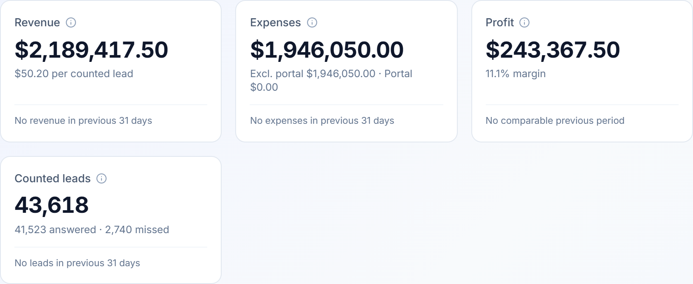
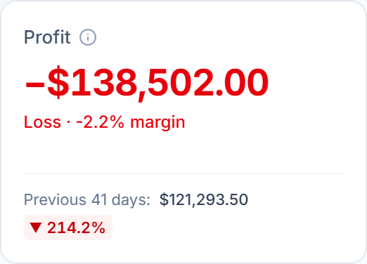
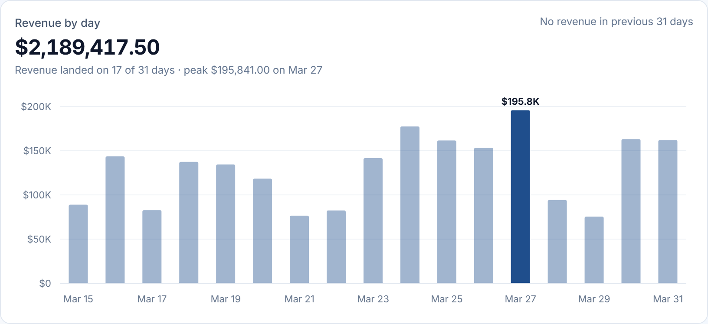
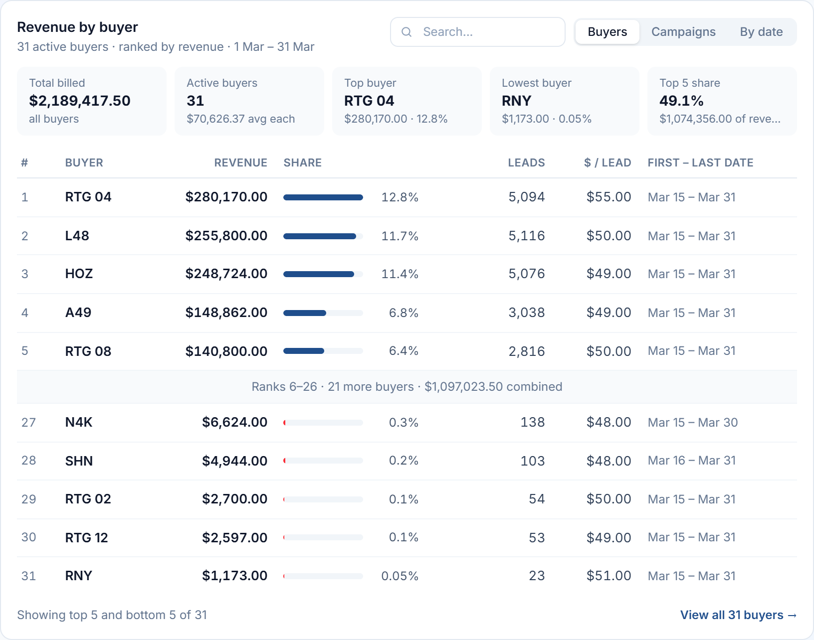
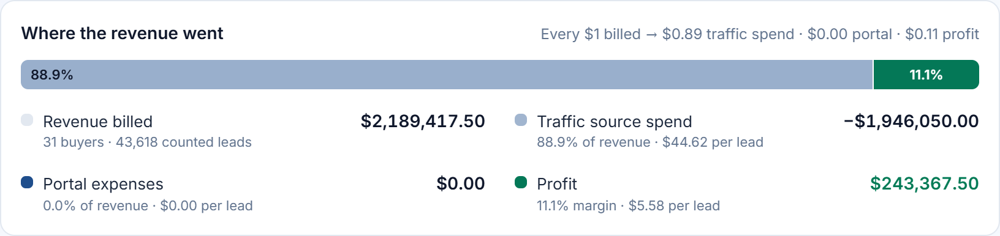
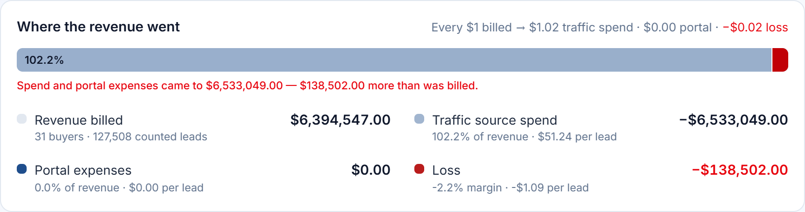
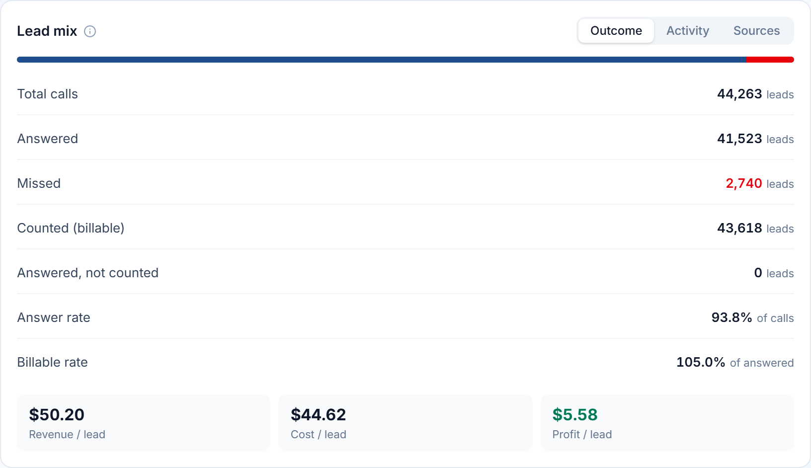
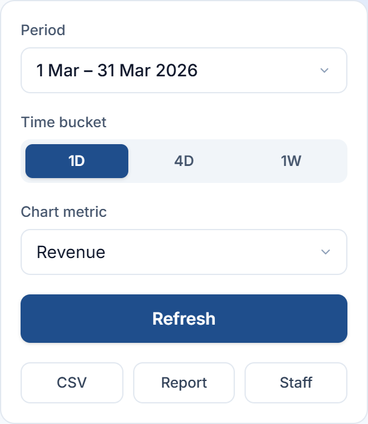
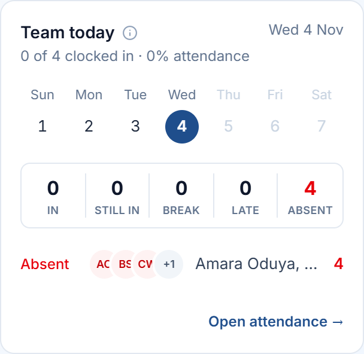
| What | Format | Example |
|---|---|---|
| Money: figures, tables, tiles | Full, always two decimals | $403,573.50 · $69,500.00 · $144.00 |
| Money: outflow or loss | True minus sign (−), not a hyphen | −$333,959.00 · −$1.09 |
| Money: bar label | Whole thousands with “~”; the peak gets one decimal | ~$63K · $138.7K |
| Money: axis | Compact | $0 · $35K · $140K · $1.2M |
| Counts | Grouped, no decimals | 8,118 leads |
| Shares | One decimal; two under 0.1% | 17.2% · 0.04% |
| Change | ▲/▼ glyph, one decimal, grouped | ▲ 16.3% · ▼ 214.2% |
| Range | Day month, year written once | 7 Aug – 4 Nov 2026 (90 days) |
| Axis and table dates | Month day | Sep 29 · Mar 15 – Mar 31 |
| Time | 12-hour | Updated 1:16 PM · 9 AM |
| Nothing to show | Em dash | — |
| Metric | Up | Down | Also red when |
|---|---|---|---|
| Revenue | good | bad | — |
| Expenses | bad | good | — |
| Profit | good | bad | Below zero, whatever the direction |
| Counted leads | good | bad | — |
| Missed / Late / Absent | no change pill | Any value above zero | |
The mock shows the page loaded and profitable. The build designs the other states to the same rules:
| State | Treatment |
|---|---|
| Loading | Grey skeletons in the shape of what is coming (a figure bar, four chart bars, table rows). Each block fills in as its own request returns. |
| Refreshing | The old numbers stay on screen but the block fades to 60%. The header dot turns amber and reads “Refreshing…”, and so does the Refresh button. Stale numbers never pass for fresh ones. |
| Empty | A small chart glyph and one sentence that says what is missing and what to try: “No revenue was recorded in this period. Try a wider date range.” |
| Partial error | One red banner at the top of the main column, naming the first failed block and how many others failed, with a Retry button. Every other block keeps working. |
| No comparison | A sentence in place of the comparison line (principle 2.3). |
| Loss | Red figure with a real minus; “Loss · −2.2% margin”; a solid dark-red shortfall segment on the revenue bar; red profit per lead. |
| No attendance access | Team today is replaced by a Lead quality card (answer rate and answered against missed), so the rail never shows a hole. |
prefers-reduced-motion.role="tab" with aria-selected; bucket and day buttons use aria-pressed; the composition bars carry an aria-label that reads the split out; a refreshing panel sets aria-busy.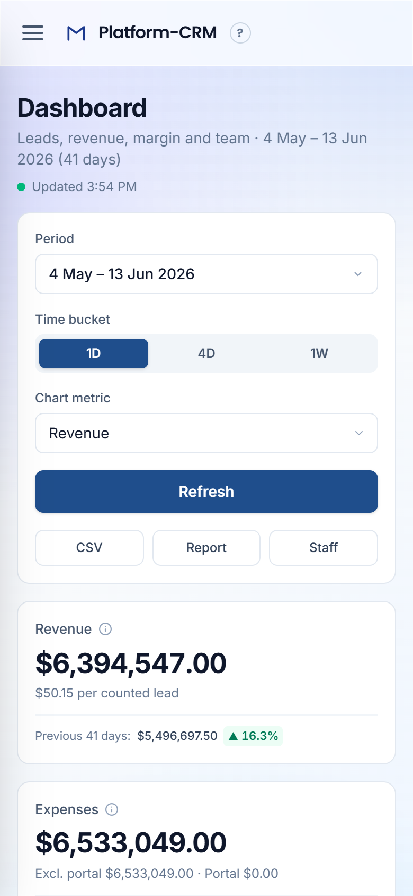
The build follows the mock block for block. These are the places it differs, each for a stated reason:
| Mock | Build | Why |
|---|---|---|
| “[date] – [date]” placeholders | The first and last day each buyer or campaign was billed in the range | The analytics API now returns first_date / last_date for top buyers and campaigns. |
| Ranking capped by the API at 50 rows | Up to 500 rows | The mock ranks 52 buyers. A cap of 50 would drop the true bottom of the list, which is exactly what the table exists to show. |
| “[$ TRAFFIC]”, “[$ SALARIES]” and a “Traffic + salaries” segment; caption “spend & payroll” | One traffic source spend entry; no salaries; caption “traffic spend” | The Dashboard has never included salaries: Profit is revenue − traffic spend − portal expenses. Adding them would change Profit everywhere, so the key shows only what Profit is made of. |
| Table money without cents (“$69,500”) and approximate totals (“~$188,340”, “$214.3K”) | Full money everywhere outside charts | House rule: money is never rounded on screen (principle 2.1). Only chart labels are approximate, and they carry “~”. |
| Only the “nothing to compare” sentences are shown | “Previous 90 days: $X ▲ 12.4%” when a baseline exists | The mock's sample period had no history. With a baseline, the change is the point of the line. |
| Loss, refreshing, empty, error and phone layouts not drawn | Designed to the same rules (sections 6 and 7) | The page must hold real data, which is regularly in a loss. |
| Campaigns, By date, Activity and Sources tabs not drawn | Same table and row styles as the drawn tabs | Tabs of one card should look alike. |
tools/screenshots.mjs and tools/build-pdf.mjs (see README.md beside this file) and update the matching principle in the same change.